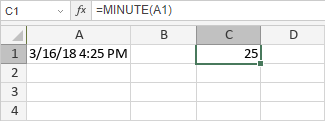

MINUTE funkcija
MINUTE funkcija je jedna od funkcija za datum i vreme. Vraća minut (broj od 0 do 59) vremenske vrednosti.
Sintaksa
MINUTE(serial_number)
MINUTE funkcija ima sledeći argument:
| Argument | Opis |
|---|---|
| serial_number | Vreme koje sadrži minut koji želite da pronađete. |
Napomene
serial_number može biti izražen kao tekstualna vrednost (npr. "13:39"), decimalni broj (npr. 0.56 odgovara 13:26) ili rezultat formule (npr. rezultat NOW funkcije u podrazumevanom formatu – 26.9.12 13:39).
Kako primeniti MINUTE funkciju.
Primeri
Slika ispod prikazuje rezultat koji vraća MINUTE funkcija.
